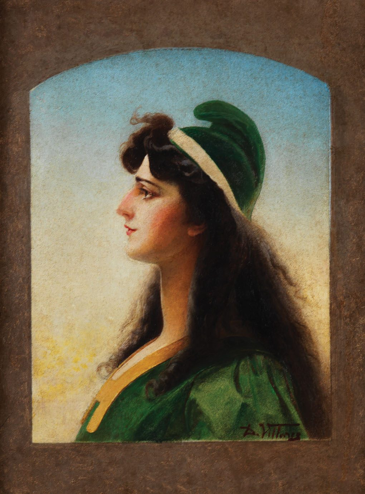
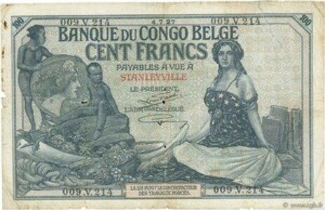
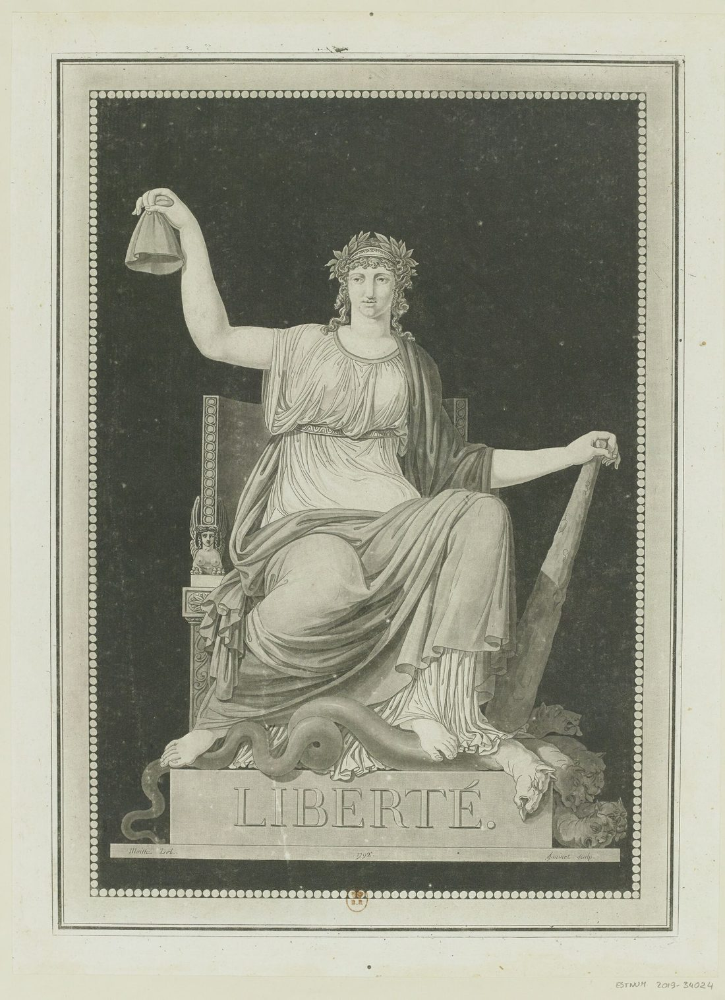
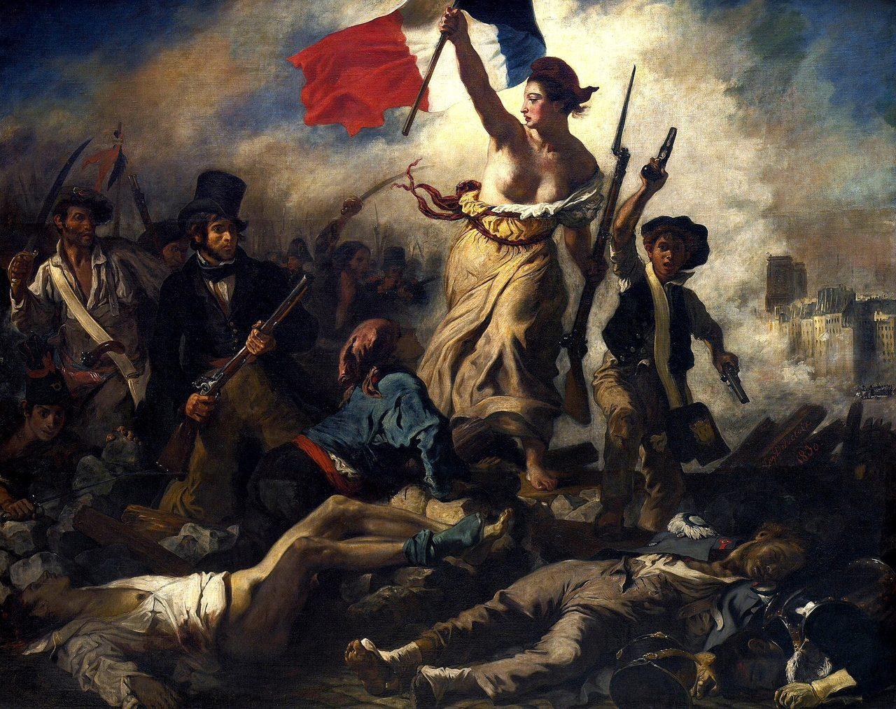
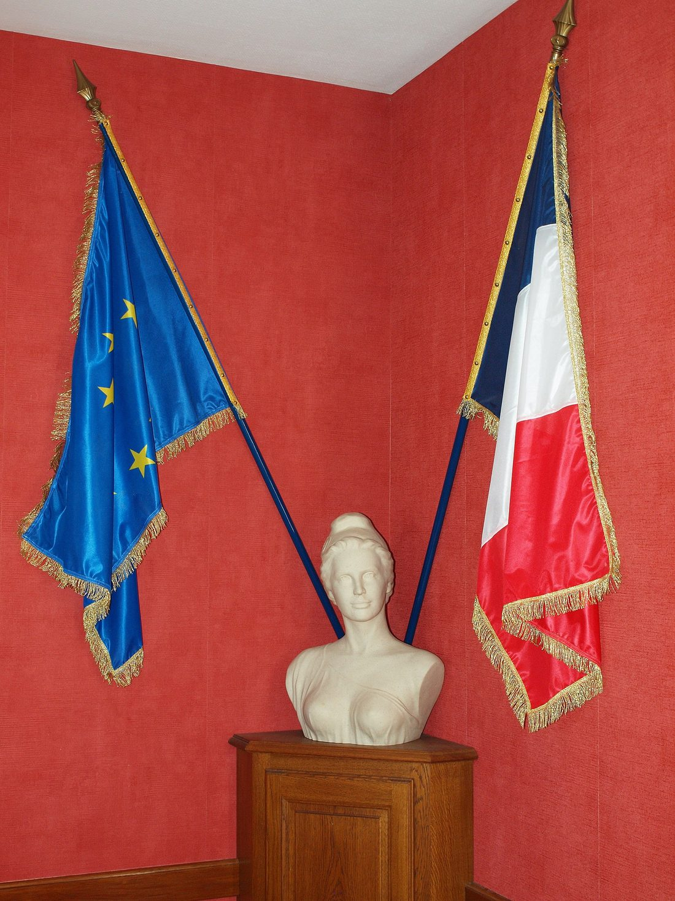
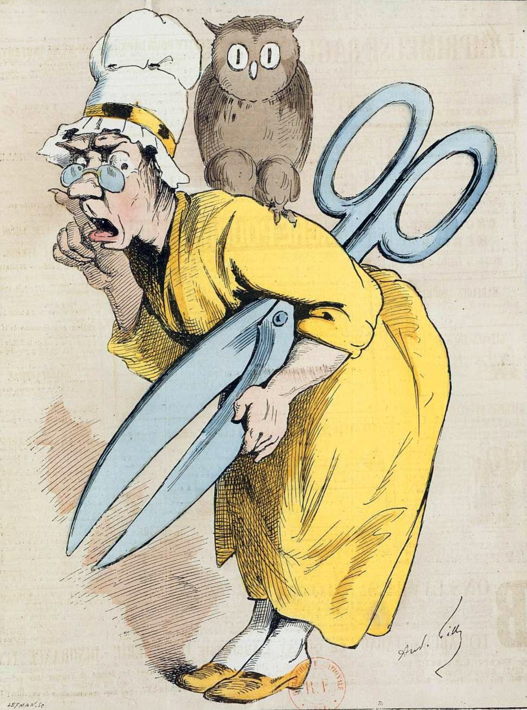
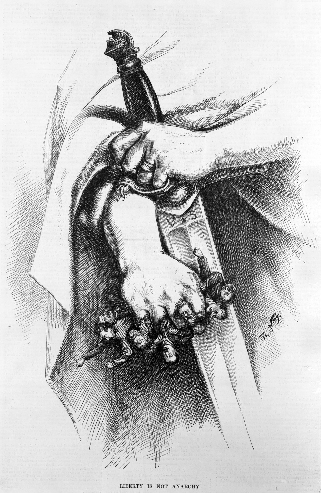
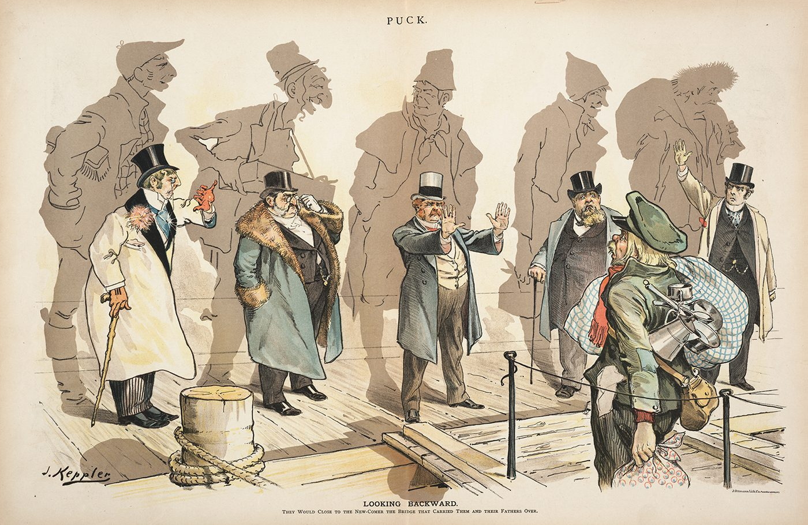

PPGD/UFSC · Grupo de Estudos de História do Direito · 15 jun 2026
Do ventre à alegoria
Da mulher como nacional subordinada ao rosto feminino da soberania
— uma passagem da dissertação à tese · ICONOCRACIA
ANA VANZIN · DOUTORADO PPGD/UFSC
Hoje não apresento um projeto — mostro uma passagem
Saio da mulher como sujeito juridicamente restringido
e chego à mulher como imagem politicamente glorificada.
Da minha dissertação sobre nacionalidade feminina para a pesquisa atual sobre iconocracia e alegoria. Duas etapas — um só arranjo de poder.
A dissertação, em uma frase
Condição jurídica feminina & nacionalidade
Aquisição, manutenção e perda forçada da nacionalidade das mulheres.
Tese central
As leis de nacionalidade não eram neutras: elas institucionalizavam uma subordinação patriarcal — sobretudo no casamento.
A mulher podia ser símbolo da nação — mas não era reconhecida como nacional de pleno direito.
O que a dissertação demonstrou · duas engrenagens
Nacionalidade dependente
A mulher era subordinada ao status nacional do marido — perdendo autonomia legal e cívica no casamento.
Ius sanguinis a patre
A nacionalidade transmitia-se pelo pai: a linhagem materna era apagada da reprodução jurídica da nação.
Não um caso isolado, mas uma estrutura: códigos de França, Itália, Reino Unido, Canadá e Estados Unidos institucionalizaram o mesmo padrão.
E as reformas vieram por contestação feminista e pressão internacional — não por neutralidade espontânea do direito.
A virada · uma hipótese mais radical
O Estado moderno fez duas operações ao mesmo tempo: retirou das mulheres a plena autonomia jurídica e deu às mulheres um lugar privilegiado no imaginário político.
Na lei
dependência
Na imagem
monumentalização
Na política
legitimação
A pergunta mudou: por que o Estado que subordina mulheres se apresenta com rosto de mulher?
A prova histórica · presença simbólica × cidadania real
Marianne, 1792 → voto feminino, 1944
152 anos entre o rosto feminino da República e o direito de voto das francesas.
Constituição-mulher, 1848 → sufrágio, 1948
Um século entre a alegoria e a cidadã.
Quanto maior a consolidação alegórica, maior a resistência à inclusão política.
A hipervisibilidade alegórica não contradiz a exclusão cívica: ela a sustenta, mascara e naturaliza.
Iconocracia · o governo pela imagem
A imagem não acompanha o poder. Ela o fabrica.
A iconocracia opera por precedência: a imagem precede e engendra a realidade política que pretende representar.
A LACUNA — DOIS PONTOS CEGOS
- Pateman tem um “ponto cego visual”: o contrato sexual “não estava em silêncio — estava em exibição”, e ela não cita uma única moeda ou monumento.
- Goodrich vê a visiocracia — o direito governa por imagens — mas nunca pergunta por que elas são femininas.
Parte II
Os quatro conceitos autorais
Três descrevem efeitos — político, subjetivo, racial. O quarto descreve a operação que os produz — e que os torna mensuráveis.
Conceito 1 · o efeito político
Contrato Sexual Visual
O Estado exibe um “rosto de mulher” enquanto mantém intacta a fraternidade masculina que o governa.
Atribuição: Pateman é a fonte do contrato não-visual. A extensão visual é autoral — a ponte que nem Pateman nem Goodrich alcançaram.
QUATRO MODALIDADES
- Substituição — a imagem ocupa o lugar da presença real.
- Naturalização — a exclusão vira “ordem das coisas”.
- Sacralização — o corpo alegórico torna-se intocável.
- Pedagogia — a figura ensina o que é ser mulher no Estado.
Conceito 2 · o efeito subjetivo
Feminilidade de Estado
Um corpo feminino apto a carregar o poder masculino sem jamais reivindicá-lo: um “recipiente vazio”, uma “infraestrutura de afeto público”.
Quanto mais desindividualizada a figura, maior a sua liquidez simbólica.
RAIZ DUPLA (não Mondzain)
- Legendre — o juiz totêmico; o “corpo sem palavras”.
- Anne Carson — a hystéra; o útero móvel, a matéria dúctil.
A codificação totêmica domestica a instabilidade carsoniana em superfície imóvel apta a sustentar a soberania.
Conceito 3 · o efeito racial
Contrato Racial Visual
A alegoria “universal” é constitutivamente branca — o neoclassicismo como tecnologia de branqueamento.


Antes que o decreto colonial declare a menoridade do indígena, o bilhete de banco já o mostra como menor.
Conceito 4 · a operação que produz os três
Purificação Clássica
A operação formal pela qual o regime iconocrático extrai o feminino histórico — biografia, materialidade, subjetividade — e o fixa numa superfície alegórica eterna, neoclássica e funcional à soberania.
MATRIZ JURÍDICA
- Kantorowicz — os dois corpos do rei: o ato inaugural da purificação.
- Legendre · Hespanha — o corpo sem palavras; categorias estamentais.
EXTENSÃO FERRAMENTAL
- Latour (1991) — a “purificação” como gesto moderno.
- Haraway · Descola — a alegoria é o inverso do ciborgue: superfície fechada, presença sem agência.
→ operacionalizada empiricamente como endurecimento.
Parte III
Como se mede uma alegoria?
De uma operação ideológica a uma escala ordinal auditável e reprodutível — cruzando iconologia, cultura jurídica e análise quantitativa.
O protocolo IconoCode · Panofsky em três níveis
Pré-iconográfico
O visível, sem interpretar: espada, balança, barrete, tocha, suporte, texto inscrito.
Iconográfico
Qual alegoria, qual tradição. Codificação ICONCLASS 48C51 — 21% do corpus.
Iconológico
Qual regime opera; qual função jurídico-política; como o Contrato Sexual Visual se manifesta.
CASO-ESCOLA · Chifflart, L'envoyé de la Justice (1859)
A Justiça feminina autoriza, mas não age; o corpo masculino executa a violência que o corpo feminino legitima. O intervalo luminoso entre as figuras é o Zwischenraum tornado literal.
Endurecimento · 10 indicadores ordinais (0–3)
De um corpo vivo, dinâmico e individual (0) a um signo de Estado abstrato, rígido e serial (3). O score é a média dos dez.
1–7 · MORFOLÓGICOS (o corpo)
- Desincorporação — corpo → busto → rosto → símbolo
- Rigidez postural — dinâmico vs. congelado
- Dessexualização — apagar os marcadores do corpo
- Uniformização facial — genérico vs. individual
- Heraldicização — absorção em programa institucional
- Enquadramento arquitetônico — a moldura que aprisiona
- Apagamento narrativo — história → ícone
8–10 · MATERIAIS (o suporte)
- Monocromatização — policromia → metal
- Serialidade — único → edição → industrial
- Inscrição estatal — o texto do Estado sobre o corpo
A serialidade de uma moeda é imposta pelo meio. Separar o morfológico do material é parte do rigor — e da autocrítica honesta da tese.
O corpus · 1800–2000 · arquivos abertos
POR PAÍS (acervo)
POR SUPORTE
A França é a “moeda forte” da iconografia política (1/3 do corpus). O Brasil não é variante periférica: é o nó analítico que revela os pressupostos raciais que a versão metropolitana silencia.
Os regimes iconocráticos · perfis morfológicos do corpo
endurecimento médio · do corpo vivo (0) ao signo de Estado (3)
Os regimes não se sucedem linearmente — convivem e se sobrepõem. A Feminilidade de Estado pode ser revolucionária em 1789 e policial em 1964.
Os corpos · Caso 1 · Bélgica, 1848 — as alegorias em duelo

A Bélgica constitucional, feminina e serena, opunha-se à França revolucionária, feminina e destrutiva. Uma agia; a outra mostrava. Nenhuma mulher real sentava naquele parlamento.
Caso 2 · Marianne — da barricada ao busto


O formato do busto é a purificação: elimina membros, mãos, torso — reduz a figura ao mínimo semiótico.
Caso 3 · por que codificamos a imagem, não o metadado
Duas Mariannes de guerra (1914–18)
Mesma função institucional — propaganda de guerra francesa. Corpos opostos:
Gritando, seios nus vs. estátua petrificada.
Emprunt National 1920 — o quarteto
Quatro cartazes, score idêntico (2.0) pelo metadado. Pela imagem: de 0.4 a 1.5 — incluindo uma Marianne-criança descalça na praia.
O estilo individual do artista modula o endurecimento — mesmo quando a função institucional é idêntica. O número capta o que a catalogação não vê.
Os números · o endurecimento é real, mensurável e ligado ao regime
O GRADIENTE (endurecimento médio)
Kruskal-Wallis: 9 dos 10 indicadores diferem entre regimes (p<0,001). Os motores: serialidade · inscrição estatal · heraldicização — a máquina de Estado. O suporte dita o corpo: a moeda endurece, a pintura amolece.
A CONTRA-ALEGORIA · a prova por negação



A sátira recusa a purificação: o corpo fica individual, sexuado, narrativo. Demonstra, por negação, o que o regime normativo suprime.
A carne que se faz lei perde, antes de tudo, sua mobilidade e seu desejo. O número capta a forma — mas não capta a raça: aí o quantitativo cede ao teórico.
Fechamento & debate
Na dissertação, mostrei que as mulheres foram juridicamente presas à nacionalidade. Na pesquisa atual, investigo como esse mesmo mundo político lhes deu um pedestal — para continuar lhes negando o cetro.
É nesse intervalo entre subordinação e glorificação que situo a iconocracia. O regime iconocrático forma o olhar antes de formar a opinião.
O que a História do Direito perde quando lê a soberania apenas como texto, e não como imagem?
OBRIGADA · ANA VANZIN · ana.vanzin@posgrad.ufsc.br